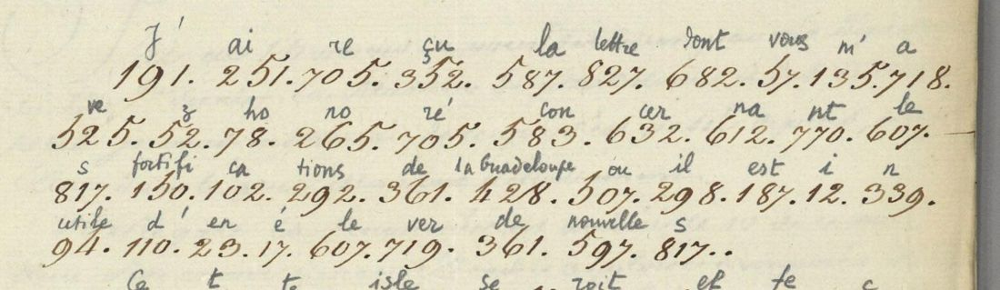
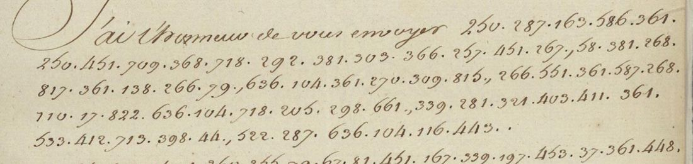
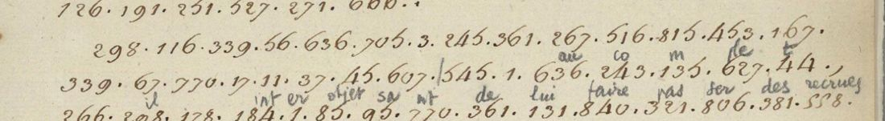

At a glanceKey from adjacent plaintext · partial (93% of the cipher)
- The letters
- Letters of the marquis de Bouillé, governor general of the Windward Islands, to the Navy minister: no. 415 of 24 May 1780 (troop return, to Sartine), no. 23 of 14 November 1780 (provisions, to Castries) and no. 12 of 24 November 1782 (defence of the islands).
- Where
- Archives nationales d'outre-mer, COL C8 A 79 f. 70, C8 A 79 f. 19 and C8 A 81 ff. 114–116, catalogue item 1203. No decipherment is filed with any of them.
- The cipher
- A numeric nomenclator, values 1–845 so far: single letters, syllables and whole words (428 = la Guadeloupe, 268 = garnison), written as dotted numbers inside clear French.
- How it was read
- Five letters of 1779 in the same series carry the clerks' decipherment above the groups. Pairing each number with its gloss gave a key of 507 values, which then decoded the three letters as French sentences and passed a statistical check.
- What they say
- In 1780 Bouillé sends 400–500 men to Grenada and notes that his regiment is 359 men short; in November the stores of Martinique are “infiniment précaire”; in 1782 he has put every island in a state of defence and sees his own presence becoming useless.
- Still open
- Scattered holes in each letter; 538 behaves as two values; a letter of 1779 from Grasse is another code (no key material); the minister's own minutes need a visit to the archive.
- Credit
- Brice Dudout (Europe chiffrée) read two 1778 letters of the same series first, with a key from the same glosses; see his write-up. The clerks of 1779 wrote the glosses the key comes from.
01 The letters
Bouillé wrote to the Navy minister every month during the war of 1778–1783, and part of each despatch went into a number code. The ministry's copies are the series C8 A of the Archives nationales d'outre-mer. The three letters here have no decipherment filed with them, and the ANOM calendar lists them as ciphers. The cipher is a numeric nomenclator whose numbers stand for letters, syllables and whole words; it is not the 1761 Windward Islands code or the 1765 d'Ennery form (both tested and ruled out).
The letters of 1778 (C8 A 77 ff. 88 and 101) in the same code were deciphered first by Brice Dudout on 28 October 2026; they are described on that page and are not read again here. The key below was recovered independently, before his page was found, and agrees with his on the same words (667 = im, 138 = Dominica, “effectifs”).
02 The key from the glosses
The ministry's clerks sometimes wrote the decipherment above the numbers. C8 A 78 f. 123 (11 October 1779) carries it above every group, syllable by syllable, and so do parts of f. 3, f. 5, f. 31 and f. 144 of the same volume. Reading each number together with the word over it gives the key directly, with no search at all.

The pairing was done from the images over several passes: f. 123 first (77 distinct groups), then f. 3 and f. 31, then f. 5 and the whole of f. 144 (thirteen further pages, read by two helper agents). The key stands at 507 groups, with its provenance for every value in key_bouille.tsv. A value read in two letters is stronger than one read in a single one; where letters disagree, the commoner value is kept and the conflict listed. Several early conflicts were settled on the images or by the new letters (46 = avec, not aux; 279 = non, not pri; 25 = même).
03 24 May 1780: troops
Letter no. 415 is a re-sent copy (“renvoi du 25 octobre 1780”), fourteen lines of cipher after the clear “J'ai l'honneur de vous envoyer”. 182 of its 190 groups have a value.

[J'ai l'honneur de vous envoyer] l'état de la situation des troupes de la Martinique, [de] la garnison de la Dominique et [de] la Grenade au 1er de ce mois, et celui de la garnison de Saint-Vincent au 1er avril dernier, n'ayant pas encore reçu de M. du Montet son état au 1er mai. Je compte envoyer [incessamment] à la Grenade quatre à cinq cents hommes de plus … Il manque au régiment de la Martinique trois cent cinquante-neuf hommes pour le mettre au complet, et il est bien intéressant de lui faire passer des recrues.

04 14 November 1780: stores
Letter no. 23, a return of provisions, has twelve lines of cipher on image 0029; 147 of 157 groups have a value. The margin carries the cipher heading “Martinique, mois de novembre”.
[J'ai l'honneur de vous envoyer] l'état des subsistances existantes dans les magasins du roi et dans [ceux] du commerce au 1er de ce mois de novembre … Les magasins du commerce sont un peu pourvus par le retour de deux bâtiments du convoi et l'arrivée d'un neutre, mais la consommation est si considérable que notre situation à cet [égard] est toujours infiniment précaire.
05 24 November 1782: defence
Letter no. 12 runs over ff. 114–116 with cipher blocks on five images (three more are covered by modern translation slips): 1,244 of 1,297 groups have a value. The key reads straight through it.
Je suis préparé à tous les événements : j'ai eu le temps de mettre toutes les colonies du roi en état de défense … Vous jugerez par l'état des garnisons que je vous envoie qu'à l'exception de la Martinique, où il ne reste plus que deux mille hommes de troupes réglées … Si je ne suis point employé dans les opérations qui doivent avoir lieu … ma présence devient inutile ici.
He describes ships sent to cruise off Barbados to cover a convoy from New England and the arriving squadron, the frigate Amphion kept at Martinique, despatches for Spanish Trinidad, and the garrisons of Saint Christopher and Saint Eustatius, taken in the previous year. Complete decryptions and English translations of all three letters are in the full texts below.
06 A check of the key
The 1,748 read groups of these letters and of f. 88 were scored with a French letter model against random keys of the same shape and against keys fitted to shuffled text: the reading scores −1.99 per letter, random keys −3.13, a key fitted to shuffled text −2.25, and the verdict is a pass. This tests that the key keeps reading new text, not that each single value is right; 538 is the one value that does not hold still (“sept” in the number words of the f. 101 enclosure, “fe” in “effectifs” on f. 88, where f. 123 has 658).
07 What is still open
- Each letter still has holes: 8 of 190 groups on f. 70, 10 of 157 on f. 19, 53 of 1,297 on f. 114, filled by context where the sentence allows and bracketed where it does not. The three letters read as sentences with scattered holes, so the target stays “read in part”.
- 538 is polyphonic or a copyist's slip; 307 reads “ba” in “la Barbade” and “ou” in one gloss of f. 3.
- C8 A 78 f. 1 (Grasse, 4 April 1779, headed “Chiffre de 1777”) is a different code: about 60% of its groups get a value from this key but the result is not French. No key material.
- The minister's ciphered minutes (C8 A 77 ff. 31, 43) and the Navy's colonial keys MAR/G/178 need a visit to the archive.
- All of these readings were made by Claude, with no historian's check against the manuscript (grade B in the full texts).
08 A test with LLM key editors
The project's first run of “weight-space programming” used this target: an LLM edits the key under a fixed budget of 25 language-model scores. On the 1778 letter the editors recovered only 2–4 of 45 blanked groups, and about 40% of their fills held against the new glosses, so an editor's fills are leads, not readings. The scripts and results are in research/keyedit/.
Full texts
The transcription and the decryption of every document on this page, so that the reading can be used and checked. Short files are shown here; all are in the repository.
Bouillé to the Navy minister, Martinique, 14 Nov 1780, ANOM C8 A 79 f. 19 (no. 23) read in part
Return of provisions in the king's and the merchants' stores on 1 November 1780: the situation is precarious, new supplies must come lest the colony be forced to buy for itself, the merchants' stores slightly refilled by two ships of the convoy and a neutral.
Builds coherent sentences, but under the read bar of 95% of words read as sense (94% here); the holes are marked in the reading.
Transcription
# C8 A 79 f.19 (Bouille to the Navy minister, no. 23, Martinique 14 Nov 1780), ark zn401wqqtxsl, image 0029 (cipher page; image 0030 is a different letter, no. 27 subsistances, all clear, no cipher); read 3 Nov 2026 # Margin (top left, under the heading 'Martinique 744'): M1: 309 815 361 / M2: 265 525 135 651 (not counted in the body lines) # Body: 12 cipher lines on the single page P1, black ink, numbers separated by dots; '?' = doubtful reading M1: 309 815 361 M2: 265 525 135 651 P1-L1: 250 287 381 744 17 708 817 762 185 400 607 817 529 P1-L2: 412 200 266 400 58 412 373 636 104 361 270 390 815 P1-L3: 687 719 705 52 798 187 564 807 173 321 448 451 571 1? P1-L4: 56 488 705 270 331 564 603 17 245 361 597 182 832 331 P1-L5: 709 564 807 245 298 306 496 485 662 126 328 82 402 P1-L6: 167 255 382 636 53 817 361 95 20 616 488 99 817 438 P1-L7: 549 817 110 23 840 400 587 353 P1-L8: 607 817 529 412 373 522 777 173 45 119 817 503 P1-L9: 607 705 322 361 641 66 412 583 38 12 266 250 404 P1-L10: 598 525 17 110 777 360? 520 587 583 679 135 116 292 P1-L11: 187 709 671 801 382 126 676 694 718 270 44 584 187 P1-L12: 440 12 339 803 195 245 328 102 272 705
Decryption
# cipher_f19_groups.txt: 157 groups, 147 valued from interlinear pairs (93.6%) M1: mo is de M2: no ve m bre P1-L1: l' etat des subsistance e xi s [762] es dans le s magasins P1-L2: du roi et dans [58] du commence au 1er de ce [390] is P1-L3: vous ver re z qu'il est on ne peu pas plus a [571] er P1-L4: que nous re ce vi on [603] e ment de nouvelle ap pro vi P1-L5: si on ne ment il [306] roit [485] [662] que pre ju di P1-L6: ci a ble au interet s de sa [20] que nous fu s sion P1-L7: force s d' en faire dans la colonie P1-L8: le s magasins du commence sont un peu pour vu s par P1-L9: le re tour de deux batiments du con vo i et l' ar P1-L10: ri ve e d' un neutres mais la con so m ma tion P1-L11: est si conside ra ble que notre situation a ce t [584] est P1-L12: toujours i n fi ni ment pre ca i re
Reading
[J'ai l'honneur de vous envoyer] l'état des subsistances existantes dans les magasins du roi et dans [ceux] du commerce au 1er de ce mois de novembre. Vous verrez qu'il est on ne peut pas plus [a...]er. Que nous recevions [promptement] de nouveaux approvisionnements, [autrement cela serait] préjudiciable aux intérêts de sa [majesté], que nous fussions forcés d'en faire dans la colonie. Les magasins du commerce sont un peu pourvus par le retour de deux bâtiments du convoi et l'arrivée d'un neutre, mais la consommation est si considérable que notre situation à cet [égard] est toujours infiniment précaire.
Translation
[I have the honour to send you] the state of the provisions on hand in the king's stores and in [those] of the merchants on the 1st of this month of November. You will see that it is as [...] as can be. [May we] receive new supplies [promptly], [otherwise it would be] prejudicial to the interests of his [majesty] that we should be forced to make them in the colony. The merchants' stores are somewhat supplied by the return of two ships of the convoy and the arrival of a neutral, but consumption is so considerable that our situation in this respect is still infinitely precarious.
Bouillé to the Navy minister, Martinique, 24 May 1780, ANOM C8 A 79 f. 70 (no. 415) read in part
Troop return for Martinique, Dominica and Grenada, Saint Vincent's return of April only, du Montet's of May still missing; Bouillé will send 400-500 men to Grenada, and the Martinique regiment is 359 men short and needs recruits.
Builds coherent sentences, but under the read bar of 95% of words read as sense (96% here); the holes are marked in the reading.
Transcription
# C8 A 79 f.70 (Bouille to the Navy minister, no. 415, Martinique 24 May 1780), image FRANOM23_C8A_079_0107, ark zn401yssxwtv; cipher only, 14 lines, read 3 Nov 2026. L1 starts on the clear line after "J'ai l'honneur de vous envoyer"; paragraph breaks before L6 and L12; vertical bar after 545 in L9 and L13 (marked |); a later blue-pencil gloss (words above L13-L14) is ignored; nothing crossed out; stray commas in the original not shown. L1: 250 287 163 586 361 L2: 250 451 709 368 718 292 381 303 366 257 451 267 58 381 268 L3: 817 361 138 266 79 636 104 361 270 309 815 266 551 361 587 268 L4: 110 17 822 636 104 718 205 298 661 339 281 321 403 411 361 L5: 533 412 713 398 44 522 287 636 104 116 443 L6: 88 810 147 1 260 255 79 67 81 451 167 339 197 453 37 361 448 L7: 115 554 1 95 268 361 402 91 538 718 402 91 479 545 453 37 L8: 587 268 361 822 187 124 95 770 17 451 781 381 177 412 714 102 L9: 250 246 545 | 103 666 195 817 458 110 17 408 250 607 289 836 L10: 817 398 361 710 266 361 328 361 454 102 801 443 646 817 L11: 126 191 251 527 271 666 L12: 298 116 339 56 636 705 3 245 361 267 516 815 453 167 L13: 339 67 770 17 11 37 45 607 | 545 1 636 243 135 627 44 L14: 266 298 178 184 1 85 95 770 361 131 840 321 806 381 558
Decryption
# cipher_f70_groups.txt: 190 groups, 182 valued from interlinear pairs (95.8%)
L1: l' etat [163] [586] de
L2: l' a si tu a tion des troupes je [257] a la martinique [58] des garnison
L3: s de la dominique et la grenade au 1er de ce mo is et celui de la garnison
L4: d' e st-vincent au 1er a ve il dernier n ayant pas encore recu de
L5: M. du mon te t sont etat au 1er ma y
L6: je compte envoi er {incessamment} a la grenade qua tre a ci n q cent hommes de plus
L7: [115] port er sa garnison de di x sept a di x hu it cent hommes
L8: la garnison de st-vincent est suffi sa nt e a cause des [177] du [714] ca
L9: l' qui it u r ni s sent d' e nous l' le ns po
L10: s te de guerre et de pre de mille ca ra y be s
L11: que j' ai fait arme r
L12: il ma n que au re gi ment de la martinique tro is cent ci
L13: n qua nt e neuf hommes pour le it er au co m ple t
L14: et il bien int er objet sa nt de lui faire pas ser des recruesReading
[J'ai l'honneur de vous envoyer] l'état de la situation des troupes de la Martinique, [de] la garnison de la Dominique et [de] la Grenade au 1er de ce mois, et celui de la garnison de Saint-Vincent au 1er avril dernier, n'ayant pas encore reçu de M. du Montet son état au 1er mai. Je compte envoyer [incessamment] à la Grenade quatre à cinq cents hommes de plus [pour] porter sa garnison de dix-sept à dix-huit cents hommes. La garnison de Saint-Vincent est suffisante à cause des [...] du [...] qui fournissent [...] les Caraïbes que j'ai fait armer. Il manque au régiment de la Martinique trois cent cinquante-neuf hommes pour le mettre au complet, et il est bien intéressant de lui faire passer des recrues.
Translation
[I have the honour to send you] the state of the situation of the troops of Martinique, [of] the garrison of Dominica and [of] Grenada on the 1st of this month, and that of the garrison of Saint Vincent on the 1st of last April, not having yet received M. du Montet's state for the 1st of May. I intend to send [shortly] to Grenada four to five hundred men more [to] bring its garrison to seventeen or eighteen hundred men. The garrison of Saint Vincent is sufficient because of the [...] of the [...] which supply [...] the Caribs whom I have armed. The Martinique regiment is short of three hundred and fifty-nine men to bring it up to strength, and it is very important to send it recruits.
Letter of 24 Nov 1782, ANOM C8 A 81 ff. 114-116 (no. 12) read in part
Defence letter at the end of 1782: all colonies in a state of defence with six months' food, only 2,000 regulars left on Martinique, ships sent to cruise off Barbados to cover the convoy from New England and the arriving squadron, despatches for Trinidad; the writer says his presence will be useless if he is not employed in the coming operations.
Builds coherent sentences, but under the read bar of 95% of words read as sense (96% here); the holes are marked in the reading.
Transcription
# ANOM COL C8 A 81 f.114 (cote 'COL C8 A 81 F 114', no. 12, Bouille, Martinique 24 Nov 1782), images FRANOM23_C8A_081_0195 to _0203; cipher numbers only, read 3 Nov 2026 from the 1792px IIIF images. Labels P<image>-L<n>; '?' = doubtful; '|' = a vertical stroke in the original; ',' ';' ':' punctuation in the original not shown except where it separates clear words; line-end hyphen dashes and pencil glosses (grey pencil words above the lines on 0195 and 0202) are ignored.
# 0195 (f.114 recto): clear opening "N 12. a la Martinique le 24 novembre 1782. Monseigneur, J'ai recu les lettres dont vous m'avez honore les 7 & 18 septembre & 10 octobre ... Mes dernieres depeches sont arrivees au moment ou je faisois partir deux vaisseaux & trois fregates pour aller audevant du convoi ... le port de la pointe a pitre de la guadeloupe," then a 3-line cipher passage, then clear "quand j'ai appris par la fregate que j'avois envoyee au vent de la Barbade ..." to "Un Batiment americain parti de Boston le 1er novembre a rencontre le 3 vingt quatre a vingt cinq Batiments". Cipher lines P195-L1 to L3 (L1-L2 carry pencil interlinear glosses; L1 starts after "pointe a pitre de la guadeloupe,").
# 0196 (f.114 verso): clear 10 lines ("croisants a l'Est du banc St Georges situe a 30 lieues de Boston ... ni des Generaux de terre & de mer en Amerique."), then a full-page cipher block, 15 lines, ending in 309 with a dash (continues overleaf). A modern pencil tick at the left of L11.
# 0197: a modern typed/blue-ink translation slip headed "Traduction du passage chiffre - lettre n 12 du 24 IX 1782" pasted over the page; under it only the last 3 cipher lines show at the foot. They are the same lines as P198-L17 to L19 (this image is the foot of the page whose upper part 0198 shows); transcribed here as P197-L1 to L3 and identical to P198-L17-L19. The slip itself is clear French text (no cipher).
# 0198 (f.115 recto): 14 cipher lines at the top (L1 begins after a vertical stroke at its start, partly under the curled slip), the clear word "St Christophe" opens L7 and the cipher continues on the same line, clear paragraph "Telle est, Monseigneur, la Situation exacte des colonies du Roy & sur laquelle vous pouvez compter. il est tres heureux que les Ennemis nous ayent donne le temps de les approvisionner, car il n'y en avoit pas une qui ne manquat de munitions de toute espece & de Troupes.", then "Pour repondre a votre depeche du 10. octobre, j'ai l'honneur de vous instruire des" followed by cipher L15-L19.
# 0199 (f.115 verso): cipher only, 24 lines, no clear text; line ends marked by dashes; last line ends 243 135 and a dash (continues on the next sheet).
# 0200: a second modern blue-ink translation slip ("vingt de ce mois afin d'intercepter les batiments ennemis ...", with notes (Ecrire)/(Bon)), covering the page; below it only the ends of the last cipher line show: P200-L1 (= last cipher line of 0202). Rest is clear French translation text.
# 0201: a third translation slip only ("il peut etre assure qu'on fera tout ce qu'il est possible a des hommes de faire. Si je ne suis point employe dans les operations ... je retournerai ...."), no cipher.
# 0202 (f.116 recto, numbered 116): cipher block of 22 lines with two clear sentences interrupting L6/L7 ("Je crois, Monseigneur, avoir rempli toutes vos vues." and "Vous jugerez," at the start of L7), the last cipher line L22 is followed by clear "Je retournerai en Europe, ainsi que le Roy a eu la bonte de me le permettre, croyant avoir rempli alors ...". Grey pencil glosses above L13 ("ses colonies principales"), L20 ("plus a attaque ... ou a ...") ignored.
# 0203: clear closing only: "que j'ai dû a son service, a la chose publique & a moi meme. Je suis avec respect, Monseigneur, Votre tres humble & tres obeissant serviteur" and signature (Bouille); the rest of the page shows only reversed show-through of the verso. No cipher.
#
P195-L1: 668 361 34? 503 569 485 46 250 261 358 699 564 160 356
P195-L2: 883? 398 266 160 303 45 23 607 719 777? 583 38 12 56 607 817 494?
P195-L3: 801 817 305 135 541 657 718 341 133 609
#
P196-L1: 88 432 328 665 705 718 211 607 817 109 817 208 397 607 194
P196-L2: 361 513 81 211 185 607 817 353 412 200 23 287 361 631 305 284
P196-L3: 522 503 527 17 245 182 669 17 185 23 444 361 710 266 361
P196-L4: 189 786 296 17 339 281 674 361 709 91 309 815 361 28 208
P196-L5: 147 17 400 211 185 381 186 72 817 23 303 266 444 361 211 185 17
P196-L6: 817 449 622 266 57 82 590 705 52 503 250 287 381 268 817
P196-L7: 56 88 769 147 17 585 718 250 736 292 361 267 507 298 807
P196-L8: 705 817 398 448 56 641 454 37 361 303 705 26 185 520 143 607
P196-L9: 425 361 587 775 88 339 251 296 17 332 398 284 643 211 185 381
P196-L10: 268 817 124 95 770 185 266 832 554 12 564 807 185 79 24 162 636
P196-L11: 496 17 708 590 641 507 516 815 453 37 361 448 266 45 443 580
P196-L12: 627 1 204 251 147 17 607 304 250 17 91 449 398 245 246 339 187
P196-L13: 110 296 806 331 270 317 682 607 817 303 266 250 207 718 590 45
P196-L14: 395 305 705 103 195 666 718 587 268 23 814 361 709 17 590
P196-L15: 428 576 17 503 402 91 454 37 731 641 636 674 516 815 309
#
P197-L1: 525 44 398 766 12 107 446 503 754 817 636 633 110 479 443
P197-L2: 361 369 508 1 705 45 181 607 666 161 806 636 107 266
P197-L3: 587 587 754 368 361 361 587 307 666 307 361 599 636
#
P198-L1: 815 | 618 25 668 807 705 103 817 709 218 321 718 443 554 1 777
P198-L2: 148 361 454 255 766 103 206 37 270 246 240 665 496 81 251
P198-L3: 305 266 270 246 731 587 845 767 754 666 110 446 787 305
P198-L4: 138 731 611 531 87 56 79 718 250 736 292 798 240 305 496
P198-L5: 251 305 361 88 44 542 777 148 400 587 104 17 266 328 56 16
P198-L6: 110 23 840 503 75 777 400 587 305 583 361
P198-L7: [St Christophe] 807 173 446 787 305 616 503 677 | 320 807 266
P198-L8: 688 45 709 91 309 815 361 28 400 587 72 17 705 817 305
P198-L9: 607 817 449 | 754 398 634 361 822 266 831 17 708 590 770 777 709
P198-L10: 17 590 246 187 777 301 740 255 162 266 240 103 666 198 17 705
P198-L11: 400 622 134 167 520 88 807 173 91 374 482 361 607 817 439 719
P198-L12: 709 284 522 576 185 409 210 791 361 243 135 832 513 81 12
P198-L13: 339 803 195 245 607 817 148 56 668 38 103 621 815 443 554 1
P198-L14: 266 246 807 305 105 321 110 777 655? 505 777
P198-L15: [Pour repondre ... vous instruire des] 63 12 292 56 208 527 185 286 443 522
P198-L16: 705 587 754 525 641 304 641 556 845 398 266 777 243 666
P198-L17: 525 44 398 766 12 107 446 503 754 817 636 633 110 479 443
P198-L18: 361 369 508 1 705 45 181 607 666 161 806 636 107 266
P198-L19: 587 587 754 368 361 361 587 307 666 307 361 599 636
#
P199-L1: 331 339 776 44 361 270 135 651 421 110 184 1 270 358 542 607 817
P199-L2: 66 35 246 45 105 446 305 665 705 817 412 583 38 12 110 401 266 58
P199-L3: 60 5 398 339 110 361 587 784 179 666 590 817 361 303 266 361 444
P199-L4: 361 710 718 270 44 398 17 836 56 641 556 845 398 12 395 161 806
P199-L5: 636 107 361 831 143 587 142 17 369 3 250 607 817 284 243 135
P199-L6: 430? 195 56 395 636 663 110 777 507 641 449 754 50 66 12 339 542
P199-L7: 240 402 251 705 817 46 270 44 398 634 507 88 658 509 503 75 718
P199-L8: 533 607 331 243 135 398 110 404 640 44 246 443 243 135 116 339
P199-L9: 361 777 185 607 817 597 126 566 705 270 608 326 45 395 184 1 185
P199-L10: 806 250 278 266 607 583 38 12 618 636 641 304 298 583 754 459
P199-L11: 17 395 772 161 709 1 17 599 636 331 339 776 44 507 331 339
P199-L12: 776 44 700 339 331 1 507 599 718 587 186 583 81 361 250 278
P199-L13: 451 587 775 298 305 705 103 195 295 110 391 361 250 228 167
P199-L14: 1 356 246 587 243 135 116 339 361 668 557 317 250 261 358 699
P199-L15: 564 266 160 556 845 398 45 446 344 185 231 607 817 83 191
P199-L16: 23 719 509 777 556 845 398 243 135 116 339 361 17 503 777 214 803
P199-L17: 167 1 184 771 285 590 770 718 778 653 607 266 191 407 598
P199-L18: 509 636 6 37 361 196 361 240 598 398 266 400 607 775 564
P199-L19: 173 718 399 211 17 583 803 461 87 211 185 607 817 269 817 45 607
P199-L20: 580 705 398 361 250 5 542 801 590 412 583 38 12 266 211 817
P199-L21: 607 817 663 832 328 718 543 12 705 250 214 803 167 1 356 246
P199-L22: 23 243 135 116 339 361 250 185 243 666 398 305 395 787 88
P199-L23: 88 339 251 59 516 103 719 143 296 17 441 398 607 554
P199-L24: 102 646 250 714 507 102 237 250 714 607 817 278 817 243 135
#
P200-L1: 459? 754 607 317
#
P202-L1: 237 807 185 766 12 107 305 705 103 195 666 361 425 17 56
P202-L2: 88 350 110 817 607 503 754 110 147 1 718 778 653 607 607 66
P202-L3: 126 668 742 807 718 554 1 607 817 730 817 361 533 361 619 103
P202-L4: 482 103 298 | 266 607 817 405 45 533 361 679 587 265 23
P202-L5: 787 210 607 6 361 270 44 398 634 361 131 832 352 225 777
P202-L6: 508 714 398 266 607 817 663 361 705 135 839 666 95 742 612 292
P202-L7: [Vous jugerez,] 503 250 287 361 694 381 303 381 419 56 607
P202-L8: 796 742 807 718 607 817 631 482 187 361 246 339 206 37 448 645 12
P202-L9: 382 798 807 250 266 763 250 491 807 17 661 162 718 270 44 398
P202-L10: 17 836? 56 361 750 587 775 641 634 643 316 320 684 735
P202-L11: 587 766 320 612 292 412 200 369 345 699 817 133 358
P202-L12: 811 266 369 397 817 417 786 326 17 708 590 770 777 268
P202-L13: 361 305 12 206 37 146 284 641 315 337 270 587 607 200
P202-L14: 173 446 750 17 143 684 353 452 185 266 298 173 446 718
P202-L15: 817 580 705 60 658 801 211 270 798 187 717 718 381 37 361 840
P202-L16: 709 88 807 432 142 344 17 400 607 817 301 246 766 12
P202-L17: 107 718 399 19 636 348 266 709 | 391 250 404 598 525 162
P202-L18: 266 607 321 95 590 381 549 817 361 213 266 361 380 400
P202-L19: 622 213 817 88 240 516 103 525 400 587 694 361 339 718
P202-L20: 399 296 17 754? 718 576 666 507 255 631 482 270 246 187
P202-L21: 81 608 817 239 116 328 305 339 270 361 525 612 770 12
P202-L22: 459 754 607 317Decryption
# cipher_f114_groups.txt: 1297 groups, 1244 valued from interlinear pairs (95.9%)
P195-L1: je de vois par ir [485] avec l' [261] p hi on quelque fré
P195-L2: [883] te et quelque troupes pour en le ver un con vo i que le s anglois
P195-L3: ra s se m [541] ient a tor to [609]
P196-L1: je suis pre pa re a tout le s evenement s [208] eu le temps
P196-L2: de met tre tout es le s colonie du roi en etat de deffen se elle
P196-L3: sont par fait e ment ap provision e es en munitions de guerre et de
P196-L4: bou che [296] e n ayant moins de si x mo is de vivres [208]
P196-L5: envoi e dans tout es des ren fort s en troupes et munitions de tout es e
P196-L6: s pe ces et vous ju ge re z par l' etat des garnison s
P196-L7: que je vous envoi e qu a l' excep tion de la martinique ou il ne
P196-L8: re s te plus que deux mille hommes de troupes re {gl} es mais sur le
P196-L9: [425] de la quel je n ai [296] e crain te elle ont tout es des
P196-L10: garnison s suffi sa nt es et pro port i on ne es la grenade seul e au
P196-L11: roit e xi ge deux ou tro is cent hommes de plus et pour y su
P196-L12: ple er [204] ai envoi e le vaisseaux l' e x pe te ment qui n est
P196-L13: d' [296] ser vi ce ici dont le s troupes et l' équip a ge pour
P196-L14: ront se re u ni r a la garnison en cas de si e ge
P196-L15: la guadeloupe attaque e par di x mille hommes doit deux au moins tro is mo
P197-L1: ve t te do i vent etre par ti s au jour d' hu y
P197-L2: de saint pi er re pour al le r crois ser au vent et
P197-L3: la la ti tu de de la ba r ba de jusque au
P198-L1: is quand meme je ne re u s si rois pas a y port er un
P198-L2: secours de mille a do u ze hommes ce qui me pa roit tre ai
P198-L3: se et ce qui doit la ga ran ti r d' etre pri se
P198-L4: la dominique doit tenu autant ainsi que la grenade a l' excep tion qu'il me se roit
P198-L5: ai se de je t ter un secours dans la 1er e et pre que [16]
P198-L6: d' en faire par venir un dans la se con de
P198-L7: [[St] [Christophe]] ne peu etre pri se que par fa mi ne et
P198-L8: [688] pour si x mo is de vivres dans la fort e re s se
P198-L9: le s pe ti te isles de st-vincent et [831] e xi ge nt un si
P198-L10: e ge qui est un opérations lon a e et me u r tri e re
P198-L11: dans ces pays ci mais je ne peu x [374] dre de le s nu ver
P198-L12: si elle sont attaque es cour ant [791] de co m pro met tre i
P198-L13: n fi ni ment le s secours que je vo u dro is y port er
P198-L14: et qui ne se roient pas d' un grand e un
P198-L15: [[Pour] [repondre] [...] [vous] [instruire] [des]] disposer i tion que [208] fait es qui y sont
P198-L16: re la ti ve deux vaisseaux deux fre ga te et un co r
P198-L17: ve t te do i vent etre par ti s au jour d' hu y
P198-L18: de saint pi er re pour al le r crois ser au vent et
P198-L19: la la ti tu de de la ba r ba de jusque au
P199-L1: vi n g t de ce m bre [421] d' int er ce p ter le s
P199-L2: batiments ennemis qui pour roient etre se pa re s du con vo i d' [401] et [58]
P199-L3: [60] at te n d' de la nouvelle angleterre cha r ge s de troupes et de munitions
P199-L4: de guerre a ce t te e po que deux fre ga te i ront crois ser
P199-L5: au vent de [831] sur la point e saint gi l' le s elle co m
P199-L6: mu ni que ront au moyens d' un ou deux pe ti [50] batiments i n ter
P199-L7: me di ai re s avec ce t te isles ou je fe rai par venir a
P199-L8: M. le vi co m te d' ar no t qui y co m ma n
P199-L9: de un es le s nouvelle que je re ce vrai qui pour ront int er es
P199-L10: ser l' escadre et le con vo i quand au deux vaisseaux il con ti nu
P199-L11: e ront leur crois si er e jusque au vi n g t ou vi n
P199-L12: g t ja n vi er ou jusque a la ren con tre de l' escadre
P199-L13: a la quel il se re u ni oc d' apres de l' offr ci
P199-L14: er fré qui la co m ma n de je garde ici l' [261] p hi
P199-L15: on et quelque fre ga te pour etre employ es ai le s circonstance j'
P199-L16: en ver rai un fre ga te co m ma n de e par un [214] fi
P199-L17: ci er int el li ge nt a la trinité espagnoles le et j' ec ri
P199-L18: rai au gouverneur hommes de beaucoup de me ri te et dans le quel on
P199-L19: peu a voir tout e con fi ance ainsi tout es le s [269] s pour le
P199-L20: su re te de l' at ter ra ge du con vo i et tout s
P199-L21: le s moyens pro pre a instru i re l' [214] fi ci er fré qui
P199-L22: en co m ma n de l' es co r te se ront pri je
P199-L23: je n ai pu tro u ver sur [296] e [441] te le port
P199-L24: ca be l' [714] ou ca [237] l' [714] le s escadre s co m
P200-L1: nu ti le ici
P202-L1: [237] ne es do i vent se re u ni r de [425] e que
P202-L2: je pren d' s le par ti d' envoi er a la trinité espagnoles le le batiments
P202-L3: que je desti ne a port er le s dépêche s de M. de va u
P202-L4: dre u il et le s avis pour M. de so la no en
P202-L5: pri ant le gouverneur de ce t te isles de lui pro cu rer un
P202-L6: pi [714] te et le s moyens de re m pli r sa desti na tion
P202-L7: [[Vous] [jugerez,]] par l' etat de situation des troupes des [419] que le
P202-L8: corps desti ne a le s deffen dre est de qui n ze hommes plus fo i
P202-L9: ble qu'il ne l' et oit l' an ne e dernier e a ce t te
P202-L10: e po que de puis la quel deux isles ont ete mi ses sou
P202-L11: la do mi na tion du roi saint c hi s to p
P202-L12: he et saint eu s ta che qui e xi ge nt un garnison
P202-L13: de se i ze hommes entre elle deux [315] gre ce la le roi
P202-L14: peu etre puis e sur ses colonie [452] es et il peu etre a
P202-L15: s su re [60] fe ra tout ce qu'il est possible a des hommes de faire
P202-L16: si je ne suis point employ e dans le s opérations qui do i
P202-L17: vent a voir lieu au [348] et si apres l' ar ri ve e
P202-L18: et le pas sa ge des force s de mer et de terre dans
P202-L19: ces mer s je me tro u ve dans la situation de n a
P202-L20: voir [296] e ti a attaque r ou a deffen dre ce qui est
P202-L21: tre vrai s emblable ma pre se n ce de ve na nt i
P202-L22: nu ti le iciReading
Je devais partir [...] avec l'Amphion et quelques frégates et quelques troupes pour enlever un convoi que les Anglais rassemblaient à Tortola [...]. Je suis préparé à tous les événements : j'ai eu le temps de mettre toutes les colonies du roi en état de défense ; elles sont parfaitement approvisionnées en munitions de guerre et de bouche, n'ayant pas moins de six mois de vivres ; j'ai envoyé dans toutes des renforts en troupes et munitions de toutes espèces. Vous jugerez par l'état des garnisons que je vous envoie qu'à l'exception de la Martinique, où il ne reste plus que deux mille hommes de troupes réglées, mais sur laquelle je n'ai [pas] de crainte, elles ont toutes des garnisons suffisantes et proportionnées. La Grenade seule aurait exigé deux ou trois cents hommes de plus, et pour y suppléer j'ai envoyé le vaisseau l'Expériment, qui n'est d'aucun service ici et dont les troupes et l'équipage pourront se réunir à la garnison en cas de siège. La Guadeloupe, attaquée par dix mille hommes, doit [tenir] deux au moins [...] trois mois. [Deux vaisseaux, deux frégates et une cor]vette doivent être partis aujourd'hui de Saint-Pierre pour aller croiser au vent à la latitude de la Barbade jusqu'au [...]. Quand même je ne réussirais pas à y porter un secours de mille à douze cents hommes, ce qui me paraît aisé et ce qui doit la garantir d'être prise. La Dominique doit tenir autant que la Grenade, à l'exception qu'il me serait aisé de jeter un secours dans la première et presque [impossible] d'en faire parvenir un dans la seconde. Saint-Christophe ne peut être prise que par famine et [a] pour six mois de vivres dans la forteresse. Les petites îles de Saint-Vincent et [...] exigent un siège, qui est une opération longue et meurtrière dans ces pays-ci ; mais je ne peux [at]tendre de les sauver si elles sont attaquées, sans courir le risque de compromettre infiniment les secours que je voudrais y porter, et qui ne seraient pas d'un grand [...]. [Pour répondre à votre dépêche du 10 octobre et vous instruire des] dispositions que j'ai faites relatives [à la défense] : deux vaisseaux, deux frégates et une corvette doivent être partis aujourd'hui de Saint-Pierre pour aller croiser au vent à la latitude de la Barbade jusqu'au vingt de ce [mois], afin d'intercepter les bâtiments ennemis qui pourraient être séparés du convoi d'[...] et [...] attendus de la Nouvelle-Angleterre, chargés de troupes et de munitions de guerre. À cette époque deux frégates iront croiser au vent de [...], sur la pointe Saint-Gilles ; elles communiqueront, au moyen d'un ou deux petits bâtiments intermédiaires, avec cette île, où je ferai parvenir à M. le vicomte d'Arnot, qui y commande, les nouvelles que je recevrai et qui pourront intéresser l'escadre et le convoi. Quant aux deux vaisseaux, ils continueront leur croisière jusqu'au vingt ou vingt[-cinq] janvier ou jusqu'à la rencontre de l'escadre, à laquelle ils se réuniront d'après l'ordre de l'officier français qui la commande. Je garde ici l'Amphion et quelques frégates pour être employées aux circonstances ; j'enverrai une frégate commandée par un [...] officier intelligent à la Trinité espagnole, et j'écrirai au gouverneur, homme de beaucoup de mérite et dans lequel on peut avoir toute confiance, ainsi que toutes les [mesures] pour la sûreté de l'atterrage du convoi et tous les moyens propres à instruire l'officier français qui commande l'escorte. Je n'ai pu trouver sur [...] le port [...] les escadres [...]. [...] doivent se réunir de [...] que je prends le parti d'envoyer à la Trinité espagnole les bâtiments que je destine à porter les dépêches de M. de Vaudreuil et les avis pour M. de Solano, en priant le gouverneur de cette île de lui procurer un [pilote] et les moyens de remplir sa destination. Vous jugerez par l'état de situation des troupes des [îles] que le corps destiné à les défendre est de quinze hommes plus faible qu'il n'était l'année dernière à cette époque, depuis laquelle deux îles ont été mises sous la domination du roi, Saint-Christophe et Saint-Eustache, qui exigent une garnison de seize hommes entre elles deux [...] ; le roi peut être [...] sur ses colonies [...] et il peut être assuré [que je] ferai tout ce qu'il est possible à des hommes de faire. Si je ne suis point employé dans les opérations qui doivent avoir lieu au [...] et si, après l'arrivée et le passage des forces de mer et de terre dans ces mers, je me trouve dans la situation de n'avoir [rien] à attaquer ou à défendre, ce qui est très vraisemblable, ma présence devient inutile ici.
Translation
I was to sail [...] with the Amphion and some frigates and troops to capture a convoy that the English were assembling at Tortola [...]. I am prepared for every eventuality: I have had time to put all the king's colonies in a state of defence; they are perfectly supplied with munitions of war and provisions, having no less than six months' food; I have sent reinforcements of troops and munitions of every kind to all of them. You will judge from the state of the garrisons that I send you that, apart from Martinique, where only two thousand regular troops remain, but for which I have [no] fear, they all have sufficient and proportionate garrisons. Grenada alone would have needed two or three hundred more men, and to make up for them I have sent the ship the Experiment, which is of no use here and whose troops and crew can join the garrison in case of siege. Guadeloupe, attacked by ten thousand men, must [hold out] at least two [...] three months. [Two ships, two frigates and a cor]vette are to have left Saint-Pierre today to cruise to windward at the latitude of Barbados until [...]. Even if I do not manage to carry a relief of a thousand to twelve hundred men there, which seems easy to me and which should save it from being taken. Dominica should hold as long as Grenada, except that it would be easy for me to throw relief into the first and almost [impossible] to get any into the second. Saint Christopher can only be taken by famine and [has] six months' provisions in the fortress. The small islands of Saint Vincent and [...] require a siege, a long and murderous operation in these countries; but I cannot [expect] to save them if they are attacked, without running the risk of greatly compromising the relief that I wish to carry there, which would not be of great [...]. [In answer to your despatch of 10 October and to inform you of] the dispositions I have made [for the defence]: two ships, two frigates and a corvette are to have left Saint-Pierre today to cruise to windward at the latitude of Barbados until the twentieth of this [month], in order to intercept enemy vessels that may be separated from the convoy of [...] and [...] expected from New England, laden with troops and munitions of war. At that time two frigates will cruise to windward of [...], off Saint Giles point; they will communicate, by means of one or two small intermediate vessels, with that island, where I shall send word to the vicomte d'Arnot, who commands there, of the news I shall receive that may concern the squadron and the convoy. As for the two ships, they will continue their cruise until the twentieth or twenty-fifth of January or until they meet the squadron, which they will join on the order of the French officer commanding it. I keep the Amphion and some frigates here for use as circumstances require; I shall send a frigate commanded by an intelligent officer to Spanish Trinidad, and I shall write to the governor, a man of great merit in whom one can have every confidence, as well as all the [measures] for the safety of the convoy's landfall and every means suitable to inform the French officer commanding the escort. I could not find [...] the port [...] the squadrons [...]. [...] must assemble [...] so that I decide to send to Spanish Trinidad the vessels I intend to carry M. de Vaudreuil's despatches and the advice for M. de Solano, asking the governor of that island to find them a [pilot] and the means of fulfilling their mission. You will judge from the state of the troops of the [islands] that the force intended to defend them is fifteen men weaker than it was at this time last year, since when two islands have been brought under the king's rule, Saint Christopher and Saint Eustatius, which require a garrison of sixteen men between the two [...]; the king may be [...] on his colonies [...] and may be assured [that I] shall do all that men can do. If I am not employed in the operations that are to take place at [...] and if, after the arrival and passage of the sea and land forces in these seas, I find myself in the position of having [nothing] to attack or to defend, which is very likely, my presence here becomes useless.
C8 A 78 f. 123 (no. 363, 11 Oct 1779): glossed letter, key source not prose
The clerks' interlinear decipherment of a letter about the fortifications of Guadeloupe, written above every group; paired group by group it gave the first 77 values of the key.
Transcription
191 251 705 352 587 827 682 57 135 718 525 52 78 265 705 583 632 612 770 607 817 150 102 292 361 428 307 298 187 12 339 94 110 23 17 607 719 361 597 817 270 44 398 634 305 496 594 658 345 754 525 245 400 777 287 361 631 305 705 817 449 343 417 382 709 284 339 266 763 361 45 119 17 361 328 361 587 309 12 754 162 381 303 742 807 185 718 587 631 482 270 326 587 513 226 12 503 705 245 451 361 130 1 44
Decryption
# ANOM COL C8 A 78 f. 123 (FRANOM23_C8A_078_0197), Bouillé to the minister, no. 363, Martinique 11 8bre 1779 (duplicata), "Faiblesse des défenses de la Guadeloupe (chiffrée)". # A contemporary decipherment is written in blue-grey ink above each code group (syllable by syllable). Transcribed 28 Oct 2026 from the image # in 800x450 crops, by lining each interlinear syllable up with the group under it (labels sit slightly up and to the left of their group). # Format per line: group=clear. Clear-text opening/closing: "Monseigneur" ... "Je suis avec respect, Monseigneur, Votre très humble et très obéissant serviteur, Bouillé". # Decipherment: "J'ai reçu la lettre dont vous m'avez honoré concernant les fortifications de la Guadeloupe où il est inutile d'en élever de nouvelles. Cette isle serait effectivement dans un état de deffense respectable si elle n'était dépourvue de près de la moitié des troupes destinées à la deffendre, ce qui la met entièrement à découvert." # The semicolon after 382 and the comma after 482 are written in the cipher line (punctuation in clear). Line ends: line 1 718, 2 607, 3 339, 4 817, 5 345, 6 705, 7 763, 8 754, 9 482, 10 451, 11 44. l1: 191=J' 251=ai 705=re 352=çu 587=la 827=lettre 682=dont 57=vous 135=m' 718=a l2: 525=ve 52=z 78=ho 265=no 705=ré 583=con 632=cer 612=na 770=nt 607=le l3: 817=s 150=fortifi 102=ca 292=tions 361=de 428=la_Guadeloupe 307=ou 298=il 187=est 12=i 339=n l4: 94=utile 110=d' 23=en 17=é 607=le 719=ver 361=de 597=nouvelle 817=s l5: 270=Ce 44=t 398=te 634=isle 305=se 496=roit 594=ef 658=fe 345=c l6: 754=ti 525=ve 245=ment 400=dans 777=un 287=état 361=de 631=deffen 305=se 705=re l7: 817=s 449=pe 343=c 417=ta 382=ble ;=; 709=si 284=elle 339=n' 266=ét 763=oit l8: 361=de 45=pour 119=vu 17=e 361=de 328=près 361=de 587=la 309=mo 12=i 754=ti l9: 162=é 381=des 303=troupes 742=desti 807=né 185=es 718=à 587=la 631=deffen 482=dre ,=, l10: 270=Ce 326=qui 587=la 513=met 226=ent 12=i 503=è 705=re 245=ment 451=à l11: 361=dé 130=couv 1=er 44=t
C8 A 78 f. 3 (no. 173, 6 May 1779): glossed letter, key source not prose
Glossed letter of 6 May 1779; its number-gloss pairs, together with those of f. 31 (8 March 1779), extend the key.
Transcription
# Pairs read off two more interlinear decipherments in the Bouillé code, 28 Oct 2026 (second session), from 1:1 and 0.8-scale crops. # Only alignments I could make with confidence are listed; most of both letters is NOT yet transcribed (see NOTES.md). # Group=clear, one line per manuscript line. Label positions sit slightly up/left of their group; ink bleed-through on f. 31 makes some alignments uncertain. # conf: all entries A unless marked ? (a '?' after the clear value = doubtful alignment). # # ANOM COL C8 A 78 f. 3 (image FRANOM23_C8A_078_0004), Bouillé no. 173, Martinique 6 May 1779, "Situation critique de la colonie ... vivres". # Decipherment: "nous avons l'honneur de vous rendre compte de l'état de la colonie dont la situation est des plus critiques ..." f3-l1: 488=nous 718=a 38=vo 289=ns 250=l' 837=honneur 361=de 57=vous 186=ren 482=dre 810=compte 361=de 250=l' 287=état f3-l2: 361=de 587=la 353=colonie 682=dont 587=la 694=situation 187=est 381=des 448=plus 172=cri 754=ti 56=que 817=s # # ANOM COL C8 A 78 f. 31 (image FRANOM23_C8A_078_0046), Bouillé no. 281, Martinique 8 March 1779 (duplicata), "états de situation des troupes; la moitié des recrues ...". # Decipherment: "J'ai l'honneur de vous envoyer l'état de la situation des troupes au 1er mars, par lequel vous jugerez que la garnison de la Martinique n'est composée que de quatre ... Des six cents quarante cinq hommes de recrue arrivés aux [vaisseaux] de l'escadre de M. le comte ... trois cent vingt cinq à l'hôpital ... ce qui provient de la marine dont ils ont été ..." f31-l1: 250=l' 287=état 361=de 587=la 694=situation f31-l2: 381=des 303=troupes 636=au 104=1er 116=ma 325=rs 503=par 607=le 775=quel 67=vous? 82=ju 436=ger 185=ez 56=que 587=la 268=garnison f31-l3: 361=de 267=la_Martinique 339=n' 187=est 243=co 135=m 836=po 305=sé 305=e 126=que 361=de 67=qua 81=tre f31-r2: 381=des 709=si 91=x 453=cents 67=qua 767=ran 398=te 167=ci 339=n 197=q 37=hommes 361=de 558=recrue? 404=ar? f31-r3: 598=ri? 525=ve 46=avec 250=l' 533=M. 607=le 243=co 135=m 398=te f31-r4: 266=et 607=le 635=s 25=noms 361=de 772=leur 361=de 666=r 56=que 245=ment f31-r5: 815=is 453=cents 331=vi 339=n 776=g 44=t 167=ci 339=n 197=q 718=à 78=ho 508=pi 417=ta f31-r6: 270=Ce 361=de 587=la 116=ma 682=dont 316=été
Decryption
# Pairs read off two more interlinear decipherments in the Bouillé code, 28 Oct 2026 (second session), from 1:1 and 0.8-scale crops. # Only alignments I could make with confidence are listed; most of both letters is NOT yet transcribed (see NOTES.md). # Group=clear, one line per manuscript line. Label positions sit slightly up/left of their group; ink bleed-through on f. 31 makes some alignments uncertain. # conf: all entries A unless marked ? (a '?' after the clear value = doubtful alignment). # # ANOM COL C8 A 78 f. 3 (image FRANOM23_C8A_078_0004), Bouillé no. 173, Martinique 6 May 1779, "Situation critique de la colonie ... vivres". # Decipherment: "nous avons l'honneur de vous rendre compte de l'état de la colonie dont la situation est des plus critiques ..." f3-l1: 488=nous 718=a 38=vo 289=ns 250=l' 837=honneur 361=de 57=vous 186=ren 482=dre 810=compte 361=de 250=l' 287=état f3-l2: 361=de 587=la 353=colonie 682=dont 587=la 694=situation 187=est 381=des 448=plus 172=cri 754=ti 56=que 817=s # # ANOM COL C8 A 78 f. 31 (image FRANOM23_C8A_078_0046), Bouillé no. 281, Martinique 8 March 1779 (duplicata), "états de situation des troupes; la moitié des recrues ...". # Decipherment: "J'ai l'honneur de vous envoyer l'état de la situation des troupes au 1er mars, par lequel vous jugerez que la garnison de la Martinique n'est composée que de quatre ... Des six cents quarante cinq hommes de recrue arrivés aux [vaisseaux] de l'escadre de M. le comte ... trois cent vingt cinq à l'hôpital ... ce qui provient de la marine dont ils ont été ..." f31-l1: 250=l' 287=état 361=de 587=la 694=situation f31-l2: 381=des 303=troupes 636=au 104=1er 116=ma 325=rs 503=par 607=le 775=quel 67=vous? 82=ju 436=ger 185=ez 56=que 587=la 268=garnison f31-l3: 361=de 267=la_Martinique 339=n' 187=est 243=co 135=m 836=po 305=sé 305=e 126=que 361=de 67=qua 81=tre f31-r2: 381=des 709=si 91=x 453=cents 67=qua 767=ran 398=te 167=ci 339=n 197=q 37=hommes 361=de 558=recrue? 404=ar? f31-r3: 598=ri? 525=ve 46=avec 250=l' 533=M. 607=le 243=co 135=m 398=te f31-r4: 266=et 607=le 635=s 25=noms 361=de 772=leur 361=de 666=r 56=que 245=ment f31-r5: 815=is 453=cents 331=vi 339=n 776=g 44=t 167=ci 339=n 197=q 718=à 78=ho 508=pi 417=ta f31-r6: 270=Ce 361=de 587=la 116=ma 682=dont 316=été
C8 A 78 f. 31 (no. 281, 8 Mar 1779): glossed troop return, key source not prose
Glossed troop return of 8 March 1779 (heavy ink show-through): number-gloss pairs for the key.
Transcription: pairs1779_f3_f31_more.txt
Decryption: pairs1779_f3_f31_more.txt
Bouillé, 17 Sep 1778, C8 A 77 f. 88 (no. 238): read first by Brice Dudout (bouille1778) decoded, not read
The monthly troop return after the capture of Dominica, read first by Brice Dudout; the decode here is shown to check that the key reads it.
A mechanical decode with holes in most sentences: shown so that the transcription and the key can be checked and improved, not as a reading.
Transcription
250 266 5 361 587 694 381 303 636 104 361 270 309 815 191 5 398 339 110 817 46 110 531 448 110 667 665 754 23 270 607 817 558 56 607 495 705 361 587 710 135 451 491 279 270 126 607 119 568 361 479 545 453 402 91 538 37 807 240 809 513 321 110 146 350 482 403 143 160 634 494 185 807 836 103 619 770 443 513 81 777 268 481 361 845 666 195 666 267 507 298 807 705 817 398 23 361 412 815 210 607 817 78 508 417 103 91 266 587 268 361 138 126 516 815 454 516 815 453 37 594 538 345 754 614 817 88 57 23 719 509 260 250 287 361 587 694 361 587 268 110 17 270 44 398 739 195 1 505 634 286 187 645 103 666 195 17 309 545 272 162 503 267 266 309 12 754 505 503 428 819 23 303 705 26 185 819 23 320 285 622
Decryption
# groups1778_f88.txt: 181 groups, 175 valued from interlinear pairs (96.7%)
L0: l' et at de la situation des troupes
L1: au 1er de ce mo is j' at te n d' s avec d' autant plus d'
L2: {im} pa ti en ce le s recrues que le {minist} re de la guerre m
L3: a an non ce que le vu {i} de hu it cent di x sept hommes
L4: ne me per met pas d' entre pren dre encore sur quelque isles anglois es
L5: ne po u va nt y met tre un garnison {suffisante} de ga r ni
L6: r la martinique ou il ne re s te en de du is ant le s ho
L7: pi ta u x et la garnison de la dominique que tro is mille tro is cent
L8: hommes ef sept c ti f s je vous en ver rai {incessamment} l' etat de la
L9: situation de la garnison d' e ce t te der ni er e isles qui est fo
L10: u r ni e mo it i e par la martinique et mo i ti e par
L11: la guadeloupe soit en troupes re {gl} es soit en mi li cesBouillé, 5 Dec 1778, C8 A 77 f. 101 (no. 259): read first by Brice Dudout (bouille1778) decoded, not read
Cover note of the next return and its enclosure; the decode here is shown to check that the key reads it (the enclosure table is in table1778_f101.txt).
A mechanical decode with holes in most sentences: shown so that the transcription and the key can be checked and improved, not as a reading.
Transcription
# C8 A 77 f.101 (no. 259, 5 Dec 1778), image 0162, ark zn401dxx151o; cipher only, 6 lines, read 3 Nov 2026 C1: 208 250 837 361 57 147 1 250 287 361 694 381 303 361 267 636 104 361 270 309 815 266 551 361 587 268 361 138 607 817 577 619 103 91 45 587 580 705 C2: 398 361 270 44 398 661 17 353 182 832 786 770 361 772 678 266 284 187 400 270 309 245 23 287 361 631 270
Decryption
# groups1778_f101.txt: 65 groups, 63 valued from interlinear pairs (96.9%) C1: [208] l' honneur de vous envoi er l' etat de situation des troupes de la martinique au 1er de ce mo is et celui de la garnison de la dominique le s tra va u x pour la su re C2: te de ce t te dernier e colonie ap pro che nt de leur [678] et elle est dans ce mo ment en etat de deffen ce
Key: key_bouille.tsv
09 Sources
- Archives nationales d'outre-mer, COL C8 A 79 ff. 19, 70; C8 A 81 ff. 114–116; the glossed letters C8 A 78 ff. 3, 5, 31, 123, 144; via recherche-anom.culture.gouv.fr (IIIF manifests, arks in the profile).
- FranceArchives and the ANOM calendar of the Martinique correspondence (shelfmarks and dates).
- Brice Dudout, Bouillé to the minister of the Navy, 1778 (the 1778 letters of the same code).
Working files, the key with provenance, the transcriptions and the profile are in targets/martinique1778.
Cite this page
Daniel Bourdeau, “Bouillé to the Navy minister, Martinique, 1780–1782”, Cyphersolver, posted 3 November 2026, https://cyphersolver.com/martinique1778.html.